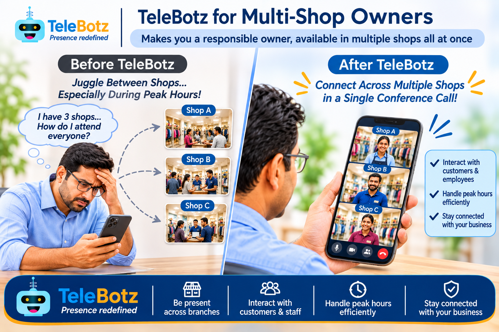

Be present across branches
Connect with multiple shop locations without travelling between them for every interaction.
Be a responsible owner. Be present across multiple shops, all at once.
Connect with customers and employees across your branches without constantly travelling from one shop to another.

Travelling between branches takes time. During peak hours, different shops may need guidance at the same moment. TeleBotz explores a way to make the owner more accessible across locations.
Connect with multiple shop locations without travelling between them for every interaction.
Personally respond to customer questions and provide assistance from another location.
Communicate with staff, clarify doubts, and provide guidance when decisions are needed.
Reach branches when they need attention, even when several locations are busy.
Maintain a closer connection with daily operations across your shops.
Make it easier for customers and employees to reach you when your presence matters.
Place a smartphone running the TeleBotz Robot App at each participating shop.
Use the TeleBotz User App to initiate a connection to the required shop locations.
Connect participating locations in a multi-shop conference and communicate with people there.
Interact with customers and employees while the on-site teams continue their physical work.
The experience depends on the supported multi-party calling configuration, network connectivity, and devices deployed at each branch. TeleBotz is intended to complement on-site teams, not replace the people who serve customers in person.
Let's explore how TeleBotz could support customer and employee interactions across your shop branches.
Discuss this use case